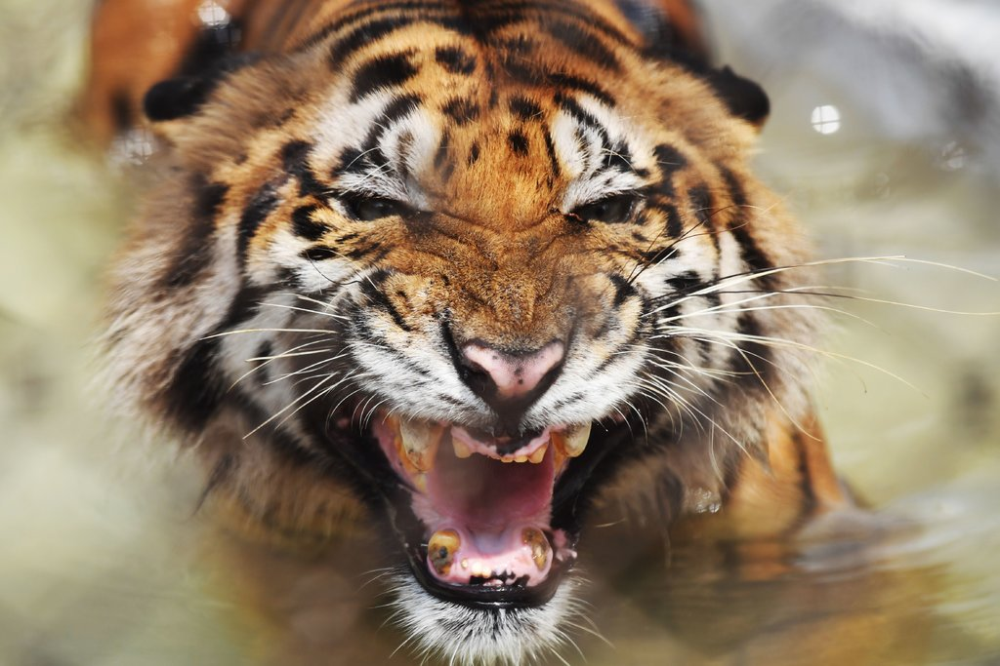

Saving Wildlife From Extinction. Humans, Too.
Even as the popular image of climate change is an emaciated polar bear on a diminishing icecap, protecting the environment isn’t just about conserving nature for nature’s sake. Protecting wildlife and wild spaces is about protecting ourselves, it’s about ensuring our own wealth, health and future well-being.When we devalue nature, we deprive ourselves of its riches. In our blindness to nature’s tangible benefits, we not only risk that our children never see the wonders of a vibrant coral reef or a majestic glacier, but also make it more likely that they experience a natural world only knowing the destructive power of its storms and droughts and never the awe-inspiring bounty of its blooms and harvests.
Jason Hochman
New York
Bengal Tigers May Not Survive Climate Change
The cats are among nearly 500,000 land species whose survival is now in question because of threats to their natural habitats, according to a report on Monday by the United Nations.The Sundarbans, 4,000 square miles of marshy land in Bangladesh and India, hosts the world’s largest mangrove forest and a rich ecosystem supporting several hundred animal species, including the endangered Bengal tiger.But 70 percent of the land is just a few feet above sea level, and grave changes are in store for the region, Australian and Bangladeshi researchers reported in the journal Science of The Total Environment. Changes wrought by a warming planet will be “enough to decimate” the few hundred or so Bengal tigers remaining there.“By 2070, there will be no suitable tiger habitats remaining in the Bangladesh Sundarbans,” concluded the study by 10 researchers.
By Kai Schultz and Hari Kumar
The Last Male Northern White Rhino Is Gone
Waking Up on an Orangutan Island